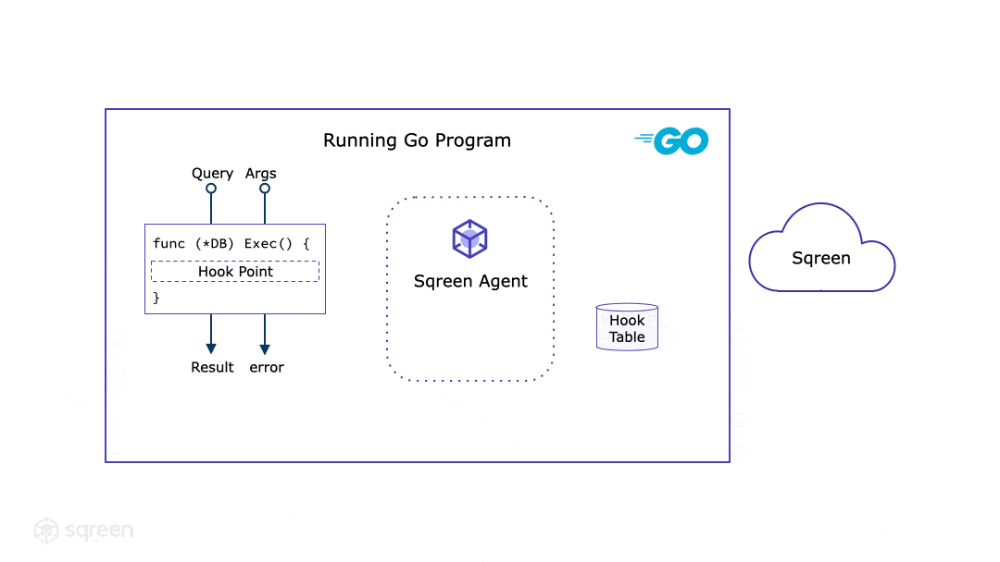

技术内幕: 构建 Go 语言的动态插装 Agent
TL;DR
我们在 Sqreen （译注：一家安全公司）一直致力于让的安全保护透明无感、接入平滑。最近，我们发布了 Sqreen for Go，它可以在不需要任何代码改动的情况下检测和阻止 Go 应用中的安全问题。为了实现这一点，我们利用了动态插装（dynamic instrumentation）在运行时向程序中插入额外的安全逻辑。作为我们动态插装系列的最新发文，这篇文章将要讨论动态插装，Sqreen 的 Go Agent，以及我们是如何把他们结合在一起的。
这种检测和保护是基于 microagent 的，microagent 是一个从运行的程序中获取数据，并与外部组件通信以报告统计信息或特定数据的组件。这里描述的 的，microagent 是一个 Go 包，它与 Sqreen 的后端服务通信。它专门设计用于安全地插装到生产系统中，因此我们用了精妙的（sophisticated）方法来最大化其稳定性，同时让它对性能的影响尽可能小。
运行中的 Go 程序与 Sqreen 概览：Agent 协程自动启动，并根据我们面板中的配置对程序进行插装。
Sqreen 的动态插装有很多优点：
- 不需要对应用代码进行修改，因此安装简易便捷；
- 完整覆盖程序堆栈，包括所有第三方库、标准库和语言的运行时；
- 安全逻辑可以由中心化的配置面板控制和更新，不需要重新部署运行中的应用。
Agent 可以主要分为三个部分：
- 插装引擎，处理让函数（function）增加额外业务逻辑的底层机制；
- 安全规则引擎，通过调用插装引擎来为函数增加安全防护逻辑。它遵循由 Sqreen 后端下发的高级（high-level）逻辑描述，例如保护 SQL 语句受到 SQL 注入攻击等；
- 数据记录机制，异步收集安全防护的数据，并定期发送到 Sqreen 后端。
接下来的章节详细介绍了我们如何在 Go 语言中解决这个非常有挑战的问题。Go 语言中的标准库 database/sql 将被用作 SQL 注入工具防护组件的示例。
插装 Go 代码
运行时插装在动态语言中有广泛的使用，通常称为 Monkey Patching。但是 Go 是一门强类型的静态语言，用它构建的代码由 Go 编译器变异成包含二进制机器码的程序文件：
在运行时，操作系统和硬件加载并执行这个二进制程序文件：
因此，运行中的 Go 程序其实就是一个运行中的二进制程序。我们通常认为，运行时插装去修改它的二进制代码是不安全、有风险的，在生产环境某些场景中甚至是不可能的。
选择正确的插装方案
前面的讨论已经告诉我们所有能做插装的地方了：由开发者手动使用的工具进行源码级别的插装，到针对运行中的程序的硬件级别的插装。这意味着我们有很多方案可以选择。而对于 Sqreen 来说，就是要选择最适合 Sqreen Agent 场景的方案：
- 对开发者友好：易于开发和部署；
- 适用于生产环境：能将安全防护应用于运行中的程序，高效，可靠且安全。
由此可得出以下的表格：
| 插装类型 | 静态插装 | 静态插装 | 静态插装 | 动态插装 | 动态插装 |
|---|---|---|---|---|---|
| 插装位置 | 源代码 | 编译器 | 二进制程序文件 | 运行中的程序 | 运行中的程序 |
| 插装技术 | 源代码插装 | 钩子函数（探针）插装 | 二进制程序文件插装 | 二进制程序代码插装 | 基于 Trap 的插装 |
| 开发者友好 | 否 | 是 | 是 | 是 | 是 |
| 适用生产环境 | 是 | 是 | 否 | 否 | 否 |
长话短说，我们选择编译时插装技术：
- 它对生产环境没有影响，因为它只在开发环境完成；
- 它由编译器自动、透明地完成；
- 它完全在用户空间完成，不需要往返操作系统（内核）；
- 它具有可移植性，因为它不依赖操作系统或者硬件支持。
而其他的插装技术：
- 二进制层面的插装很难在生产环境做到安全可靠；
- 基于 Trap 的技术（例如用户空间探针）较为低效，因为需要硬件中断。同时它也不具备可移植性，且需要不安全的执行权限；
- 源代码插装对于开发者来说很难管理，并且只能处理应用程序代码范围的插装。
基于以上的分析，我们决定使用编译时插装的技术来为 Go 语言程序添加运行时插装能力。
钩子策略（Hooking strategy）
我们需要编译器为 Go 程序中的函数添加插装钩子点位（hook points），以便让 Sqreen 的 microagent 监控和保护函数执行。例如，我们想在 SQL 执行函数添加钩子，检测函数参数中的 SQL 语句是否存在注入情况，并在检测到（注入）攻击时中止函数调用。
为此，我们的钩子策略允许我们通过以下方式监控和保护函数的执行：
- 读取函数参数，监控甚至检测攻击；
- 可以立即返回，以安全地中止函数调用，防止发生攻击。
SQL 执行函数钩子启用时，SQL 注入保护的示例：当语句中检测到注入时，函数需要马上中止，返回一个不为
nil的错误。
以下代码段展示了一个被插装的 Go 函数，它使用了之前描述的钩子策略：
// 这是一个函数的示例，返回给定参数的json序列化结果。
//
// 该函数插装了一个演示的钩子，监控函数调用，以实现保护
// 控制流程，并在必要时中止调用。
//
// 为此，以下插装代码块由两部分组成:
//
// 1. The prolog: 它是插装的起点，挂钩在正常代码执行之前，
// 对应其输入参数。它会返回一个布尔值和 epilog 钩子，
// 当函数调用必须中止时布尔值为 true。
//
// 2. The epilog: 它是由 prelog 返回的函数，用于挂钩在函
// 数返回时以及对应函数返回值。它由 defer 执行，以保证在
// 任何返回情况下均会执行到。
//
func myInstrumentedFunction(a int) (result []byte, err error) {
// 插装代码段
{
// prelog 钩子启用。
// 注意这个示例不是线程安全的，但我们的实际实现中加载函数值
// 是原子（atomically）的。
if myInstrumentedFunctionHook != nil {
// 用函数参数调用 prelog 钩子，并检查返回值
epilog, abort := myInstrumentedFunctionHook(a)
// 不管 abort 值如何，epilog 方法总会由 defer 执行以
// 观测所有返回情况。
if epilog != nil {
defer epilog(&result, &err)
}
// 如果 abort 值为 true，则立即从函数中返回。返回前可能
// 执行 epilog 函数。
if abort {
return
}
}
}
// 正常代码
return json.Marshal(a)
}
// 插装函数的 prolog 钩子
var myInstrumentedFunctionHook myInstrumentedFunctionPrologHookType
// 函数的 prelog 和 epilog 钩子定义，强类型并与函数签名保持一致。
type (
myInstrumentedFunctionPrologHookType func(a int) (myInstrumentedFunctionEpilogHookType, bool)
myInstrumentedFunctionEpilogHookType func(result *[]byte, err *error)
)
你可以在 Go Playground 运行完整的示例代码：https://play.golang.org/p/zAQaf_rGaRs
编译时（Compile-Time）插装：向 Go 程序添加钩子点位
Go 编译器默认不提供这种钩子点位插装。但是，代码生成已经很常见，并且在 Go 语言中也有广泛使用。例如，Go 编译器在代码覆盖率或竞态检测中都有使用到这种技术。Go 语言标准库有解析、修改、重新生成Go 代码所需的所有工具。因此，我们选择在一个独立的插装工具中实现安全的源码层面插装，使其能与 Go 编译器集成，生成插装后的 Go 程序文件。
集成 Sqreen 插装工具到 Go 编译器中并生成插装后的 Go 程序文件。
这个工具会在每次编译时被 Go 编译器调用，并插装所有定义了的函数。
SQL 执行函数源码层级的插装示例：接收 Go 源码文件作为输入，输出增加了钩子点位插装的新源码。
原有的源码文件不会被修改，插装后的源码会生成到编译器的构建目录（build directory）中。因此，可以使用 Go 构建选项 -work 来查看插装后的代码，它会打印结果并保留构建目录。
在编译器层级处理插装的另一个好处是，可以完整地对所有 Go 语言涉及到的组件进行插装。我们只对少量的 Go 库包进行了插装，这些库包记录在文档中：https://docs.sqreen.com/go/instrumentation/#list-of-instrumented-packages
运行时插装：挂载安全防护逻辑到钩子点位
基于上述的编译时插装方案，Sqreen 的 Go Agent 现在可以通过钩子表（一个由工具生成的 Go 数组）找到钩子点位，并在需要时进行插装。在 SQL 注入防护的例子中，当我们在面板上启用该功能后，Agent 会收到 SQL 注入安全的规则。它会包括插装 SQL 执行函数（当前一共有 3 个：prepare，exec 和 query）所需的信息，以及 SQL 注入防护逻辑。
借助标准库中的 reflection，钩子点位的 Go 类型（译注：此处应指函数位置、函数签名等信息）也用于检查和挂载防护逻辑。挂载原子操作，在并发使用场景下也是安全的。

在这个示例中，Agent 收到 Sqreen 后端的 SQL 注入防护指令。当应用设置中的防护开启，Agent 检索钩子表中的钩子，检验是否和将要挂载的函数类型信息匹配，最后原子地挂载到钩子点位上。
挂载之后，函数的执行就能被观察到，更重要的是，能在检测到攻击时中止执行。安全防护可以在函数调用上下文进行它的检测，并借助 Go 函数的签名，安全地中止函数调用，返回一个不为 nil 的错误。
我们的安全防护还可以自动通过取消（cancel） Go request context 和根据面板配置响应 HTTP 请求，来中止 HTTP 调用处理。
HTTP 请求由 Sqreen 自动管理：根据面板配置进行响应，以及通过取消 Go request context 来中止请求，并正确地传播中止信息。
数据传输
所有加在请求处理流程中的操作都是设计成异步的，以规避对响应时间的影响。当一个新的 HTTP 请求开始时，我们的中间件函数添加了一些数据结构到请求中，它们可以在挂载的防护中被获取到，用以收集安全相关的信息，例如攻击详情、指标和事件。当请求中止时，请求的数据结构通过非阻塞的 Go channel 异步送往 Agent，这样不会时阻塞到 HTTP 请求的 handler 把它发出去。
Agent 协程大部分时间都在休眠，仅在 Go channel 有数据时被 Go 调度器唤醒。Agent 收集数据，暂存攒批，最后定时发送至我们的后端服务（默认 20 秒一次）。我们的安全防护不收集敏感数据，Agent 会强制清除所有已发送至后端的数据。总而言之，这个实现就是个简单的异步 Go 程序。
性能和鲁棒性
Sqreen Go Agent 只使用了标准的 Go 语言技术，但是它所充当的角色需要我们仔细考虑以下几方面：
- 我们关注它对 Go 调度器的影响以及并发场景下的压力。我们通过设定很少的、固定数量的 goroutine 数（目前为 3）来减轻潜在影响。其中一个不错的例子是我们的指标管理，它是基于原子操作的、无锁的。这些都是为了避免 Go channel 替代方案中引入在阻塞操作进而对调度产生影响。这种选择使其执行开销可以忽略不计，并且不涉及任何数据队列管理。这对于存在大量并发、可以管理上千个 goroutines 的 Go 服务来说是非常重要的；
- 我们通过执行的 deadline 来保证 Agent 有时间和内存用量的边界限制（特别是对于我们挂载的防护），以及各种数据结构的最大长度；
- 我们关注垃圾回收的压力，通过使用内存池来规避频繁的小内存分配过程。
Agent还有针对通信失败、大量请求流量、内部发生非预期的行为的鲁棒性设计，其工作不依赖于后端服务，并且可以重启或者停止工作来保证最大程度的安全可靠。
展望未来
我们在这篇博客中描述了生产级插装 Agent 的上层概念。动态插装 Agent可以用于处理很多不同的任务，例如性能监控、错误监控或安全防护。
在 Sqreen，我们的 Go Agent 利用动态插装技术来保护应用，并且提高 Go 应用的可观测性。如果对 Sqreen 感兴趣或者想动手试试 Go Agent，可以来 Sqreen 官网转一转。
请继续期待下一期关于 Go Agent 内部实现的细节介绍！